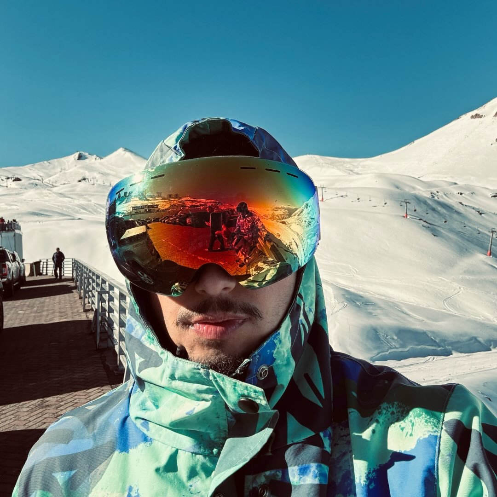

DESIGNER ENGINEER · UI/UX · PRODUCT DESIGNER
{{ t.hero.titleLine1 }}
{{ t.hero.titleLine2 }}
{{ t.hero.subtitle }}
{{ t.sobre.badge }}

{{ t.sobre.eyebrow }}
{{ t.sobre.title }}
{{ t.sobre.p1Strong }}{{ t.sobre.p1Rest }}
{{ t.sobre.p2Pre }}{{ t.sobre.p2Strong1 }}{{ t.sobre.p2Mid }}{{ t.sobre.p2Strong2 }}{{ t.sobre.p2Post }}
{{ t.skills.eyebrow }}
{{ t.skills.title }}
{{ t.projetos.eyebrow }}
{{ t.projetos.title }}
{{ t.projetos.hint }}
Mestry
{{ t.projetos.items.mestry.category }}
{{ t.projetos.items.bmw.title }}
{{ t.projetos.items.bmw.category }}
Got Nest?
{{ t.projetos.items.gotnest.category }}
{{ t.projetos.items.payflow.title }}
{{ t.projetos.items.payflow.category }}
{{ t.contato.eyebrow }}
{{ t.contato.titleLine1 }}
{{ t.contato.titleLine2 }}
{{ t.contato.footer }}